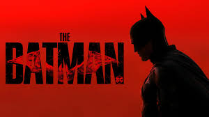

En su segundo año luchando contra el crimen, Batman (Robert Pattinson)
investiga una serie de asesinatos sádicos perpetrados por El Acertijo en
Gotham City.
Esta búsqueda lo lleva a descubrir una red de corrupción oculta que
involucra a su propia familia, En su segundo año luchando contra el
crimen, Batman (Robert Pattinson) investiga una serie de asesinatos
sádicos perpetrados por El Acertijo en Gotham City.
Esta búsqueda lo
lleva a descubrir una red de corrupción oculta que involucra a su propia
familia, forzándolo a replantearse su papel como vengador y convertirse en
un símbolo de esperanzaforzándolo a replantearse su papel como vengador y
convertirse en un símbolo de esperanza